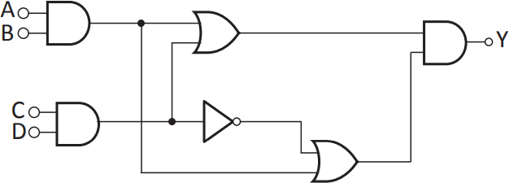

Um sistema de tempo real satisfaz explicitamente restrições de tempo de resposta, podendo ter consequências como riscos ou falhas caso não cumpra essas restrições. O circuito lógico a seguir faz parte de um sistema de tempo real que realiza o acionamento de um alarme.
Nesse circuito existem vários atrasos de propagação do sinal, que por sua vez geram atrasos no acionamento do alarme. Na forma como a lógica está implementada, o circuito não atende o requisito de tempo real especificado pelo sistema. Para cada porta lógica utilizada, os atrasos típicos, em unidades de tempo (u.t.), são:
Após a simplificação do circuito, o menor tempo possível para o acionamento do alarme é de